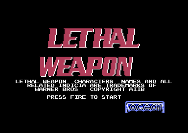
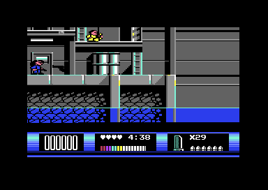
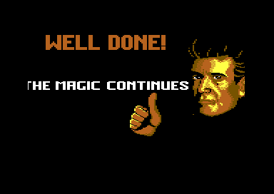

<meta charset="utf-8">
<meta name="viewport" content="width=device-width, initial-scale=1">
<title>{{title}}</title>
<link rel="preconnect" href="https://fonts.googleapis.com">
<link rel="stylesheet" href="https://fonts.googleapis.com/css2?family=Lato:wght@400;700;900&family=IBM+Plex+Mono:wght@400;500&display=swap">
<style>
:root{
  --bg:#23262d; --paper:#e9e7e1; --surface:#ffffff; --surface-2:#f1efea; --line:#d5d3cc; --line-soft:#e0ded8;
  --ink:#2f3136; --ink-soft:#55585f; --ink-mute:#80838a;
  --link:#1f5fa8; --link-hover:#154480; --accent:#1f5fa8;
  --amber:#c25a00; --cyan:#1f5fa8; --coral:#d04a3a; --green:#2a8a4a; --violet:#4a5bd6; --hl:#fff0c2;
  --chip:#2f3136; --chip-ink:#ffffff;
  --c64blue:#40318d; --c64grey:#686868;
  --fd:'Lato',system-ui,sans-serif; --fb:'Lato',system-ui,sans-serif; --fm:'IBM Plex Mono',ui-monospace,Menlo,monospace;
  --col:1080px; --gx:68px; --fs:17px; --lh:1.6; --hw:900; --h1:46px; --h2:26px; --sy:48px; --pp:26px; --r:10px;
  --plate-shadow:0 1px 2px rgba(0,0,0,.05),0 4px 14px rgba(0,0,0,.05);
}
*{box-sizing:border-box}
html{background:var(--bg);min-height:100%}
body{background:var(--paper);color:var(--ink);font-family:var(--fb);font-size:var(--fs);line-height:var(--lh);max-width:var(--col);margin:0 auto;min-height:100vh;padding:0 0 4rem}
h1,h2,h3{font-weight:var(--hw);letter-spacing:-.01em;text-wrap:balance;color:var(--ink);margin:0}
.wrap{padding:0 var(--gx)}
.hero{padding:48px var(--gx) 8px;text-align:left}
.eyebrow{font-family:var(--fm);font-size:12px;letter-spacing:.08em;text-transform:uppercase;color:var(--ink-mute);margin:0 0 10px}
.hero h1{font-size:var(--h1);line-height:1.15;letter-spacing:-.02em;margin:0 0 14px}
.hero .sub{margin:0 0 .6em;color:var(--ink-soft)}
section{padding:var(--sy) 0 24px}
section:last-of-type{border-bottom:none}
.fig{font-family:var(--fm);font-size:12px;letter-spacing:.08em;text-transform:uppercase;color:var(--ink-mute);margin:0 0 10px}
h2.t{font-size:var(--h2);margin-bottom:12px}
.lede{color:var(--ink-soft);margin:0 0 30px}
.plate{background:var(--surface);border:1px solid var(--line);border-radius:var(--r);padding:var(--pp);box-shadow:var(--plate-shadow)}
.cap{font-size:14px;color:var(--ink-mute);margin-top:14px;line-height:1.55}
.cap b{color:var(--ink);font-weight:700}
code{font-family:var(--fm);font-size:.82em;background:var(--chip);color:var(--chip-ink);border-radius:4px;padding:2px 6px;overflow-wrap:break-word;-webkit-box-decoration-break:clone;box-decoration-break:clone}

table.t{border-collapse:collapse;margin:0 0 20px;font-size:15px}table.t td,table.t th{border-bottom:1px solid var(--line);padding:6px 12px 6px 0;text-align:left;vertical-align:top}
sup.fn{font-size:.7em;line-height:0}sup.fn a{text-decoration:none}
</style>
<!-- tabs -->
<header class="hero">
  <p class="eyebrow">1992 · Ocean Software</p>
  <h1>Lethal Weapon</h1>
  <p class="sub">Riggs and Murtaugh clear fourteen stages of Los Angeles against the clock, in one of the last film licences Ocean made for the Commodore 64.</p>
</header>
<main class="wrap">
<section id="story">
  <p class="fig">01 · The story</p>
  <h2 class="t">Two detectives, one city</h2>
  <div class="plate"><p class="cap"><b>The title screen.</b> The title program draws the logo and plays Mark Cooksey's <a href="music.html">title tune</a> while the game loads behind it.</p></div>
  <p>The game follows the Lethal Weapon films. You play one of the two Los Angeles police partners, Martin Riggs or Roger Murtaugh, and fight your way through the city's criminals.<sup class="fn"><a href="about.html#src-1" title="Wikipedia, Lethal Weapon (video game)">1</a></sup> You pick your man once, on the <a href="controls.html#select">select screen</a>, and keep him to the end.</p>
  <p>Other versions let the player choose a mission. On the Commodore 64 the stages come in a fixed order, redesigned for the machine.<sup class="fn"><a href="about.html#src-1" title="Wikipedia, Lethal Weapon (video game)">1</a></sup> The first is the docks. Each stage is a level larger than the screen that <a href="graphics.html#screen">scrolls in all eight directions</a>, and each has <a href="gameplay.html#play">five minutes on the clock</a>. The <a href="levels.html">Maps</a> tab draws all fourteen.</p>
  <div class="plate"><p class="cap"><b>Stage 1A, the docks.</b> The panel shows the score, the lives as hearts, the clock, the energy bar, the magazines, and the six rounds in the gun.</p></div>
  <p>If you reach the last door, the ending loads a portrait of the man you played.</p>
  <div class="plate"><p class="cap"><b>The ending.</b> A separate program, loaded from the disk after the last stage.</p></div>
</section>
<section id="makers">
  <p class="fig">02 · The people behind the game</p>
  <h2 class="t">An Ocean team, uncredited on screen</h2>
  <p>The game shows no names. Mark Cooksey wrote the music, as he confirmed to the Video Game Music Preservation Foundation.<sup class="fn"><a href="about.html#src-2" title="VGMPF, Lethal Weapon (C64)">2</a></sup> The booklet is reported to credit Michael Delves with the programming and Don McDermott and Adrian Page with the graphics. That report reached this page second-hand, through a forum post that quotes the booklet, and has not been checked against the booklet itself.<sup class="fn"><a href="about.html#src-3" title="Lemon64 and GameBase64 search summaries">3</a></sup></p>
</section>
<section id="reception">
  <p class="fig">03 · Reception</p>
  <h2 class="t">Late, but polished</h2>
  <p><i>Commodore Format</i> covered the game in its February 1993 issue, beside Street Fighter 2 and Dalek Attack. A look back at that issue by the Commodore Format Archive judged that the game "wasn't bad", and that "it was cool to see another film license on the C64 so late". It called the action "shooty/platformy" and "typically polished".<sup class="fn"><a href="about.html#src-4" title="Commodore Format Archive, issue 29">4</a></sup> The magazine's own score is not recorded here.</p>
</section>
<section id="hidden">
  <p class="fig">04 · What's hidden</p>
  <h2 class="t">A stage nobody reaches, and a crash at the end</h2>
  <p>The code holds more than the game shows. The table of stage files names a stage L4AX, but the disk holds no such file and no door leads to it. When the last continue runs out, the game asks the disk for a file called TITLE, which this disk does not hold, and crashes. The clock pays out a magazine every five seconds, which is why ammunition rarely runs out. The <a href="discoveries.html">Discoveries</a> tab tells each story with its code.</p>
</section>
</main>
<footer style="margin:16px 0 0;padding:22px var(--gx) 0;border-top:1px solid #e0ded8;font-family:'IBM Plex Mono',ui-monospace,Menlo,monospace;font-size:12px;color:#80838a"><a href="https://github.com/gamesexplained/gamesexplained" style="color:#1f5fa8;text-decoration:none">GitHub</a> · <a href="https://discord.gg/3V9GWyRDWV" style="color:#1f5fa8;text-decoration:none">Discord</a><br>© Games Explained contributors. Write-ups, facts and symbol maps are available under <a href="https://creativecommons.org/licenses/by-sa/4.0/" style="color:#1f5fa8;text-decoration:none">CC BY-SA 4.0</a>; code under <a href="https://opensource.org/licenses/MIT" style="color:#1f5fa8;text-decoration:none">MIT</a></footer>
